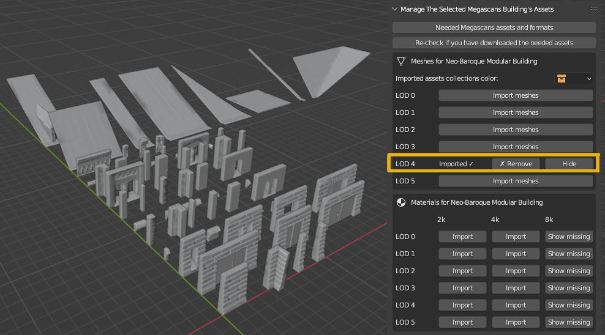

Creating Megascans buildings#
Warning
You need to have the Quixel Bridge program installed and to download the Megascans assets from it and NOT from the Megascans website or using any other method. SceneCity DOES NOT INCLUDE any Megascans assets, but uses those you’ve downloaded using Quixel Bridge.
Megascans assets are very high quality and versatile, however they are not the easiest to use because they consist of so many mesh LODs, materials and textures. They are often tedious to import and setup. There is Bridge, but it’s not always up to date with Blender, and even when it’s not buggy you still import assets one by one. No longer with the help of SceneCity. It’s not a generic replacement for Bridge, but you can make exploiting some specific Megascans assets in Blender very easy, as described below.
There are two features in this category:
You can import all the assets of a Megascans building very quickly
You can use those assets to create procedural buildings
Importing Megascans buildings assets#
What is a Megascans building? One of their named collections of modular building parts. For example Neo-Baroque Modular Building (<= have a look but do not download from this link, download using Quixel Bridge ).
You can import them with SceneCity :
1 - Select a building#
In the N-panel of a 3d viewport => SceneCity 2 tab, find the Select a Megascans Building panel, and select a building. For now not all of the Megascans buildings are available, more will be added update after update.
2 - Check what assets are needed#
In the Manage The Selected Megascans Building's Assets panel, click on the first button. Look at exactly which Megascans assets are needed, so you can download them with Quixel Bridge. The message displayed also tells you what file formats and which textures channels you need to download.
3 - Download the assets using Quixel Bridge#
Warning
You MUST download the assets using Bridge’s interface, and you must NOT download zip files and extract them manually. SceneCity expects the specific folder and files structure that Bridge creates when it downloads assets for you.
4 - Let SceneCity scan your assets#
Click on the second button. SceneCity will scan your Megascans files and let you know what you are missing. You can make SceneCity check again at any time, if you’ve downloaded new assets since the last time you clicked on the button.
5 - Import the meshes#
Now you can import in the currently opened .blend file any mesh LOD and any texture resolution that you need, for the WHOLE building, and that’s a lot of assets. When all the meshes for a given LOD are imported, they are conveniently named, spaced out in the 3d scene, and organized into objects collections. They don’t have any material applied on them for now, as materials come in many versions as well. You’ll apply specific materials when you generate the buildings.
You can also toggle their visibility in the viewport and in the outliner, to keep your file clean and organized.
If you have missing assets you need to download for a specific LOD, a button for that LOD will let you know which ones.
6 - Import the materials#
Now it’s time to import the materials. For each LOD of the building, you have several texture resolutions. Click on the ones you want, and all the materials and textures will be imported. Again, if you have missing files, you can know which ones by clicking on the corresponding buttons.
Your assets are ready now. You can use them to assemble buildings manually, you’ve just saved a lot of time importing and setting up all the assets via SceneCity. And you can use SceneCity to assemble buildings procedurally.
Generating Megascans procedural buildings#
Note
You need to have completed the steps above to follow this part.
In the N-panel of a 3d viewport =>
SceneCity 2tab, find theCreate New Megascans Buildingspanel.
- Set the parameters for the building :
a LOD among those you imported
a texture resolution for the materials you imported for that LOD
the floor size on the horizontal plane, the buildings have a rectangular floor shape (for now)
the number of loors
Click on the button and a new building will appear, all its modular parts instanced as objects that you can select and modify. They are nicely named and organized, and the whole building is in an objects collection so you can instanciate it very easily.